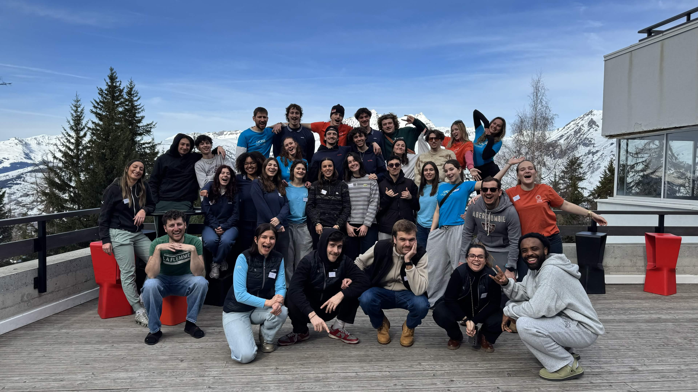
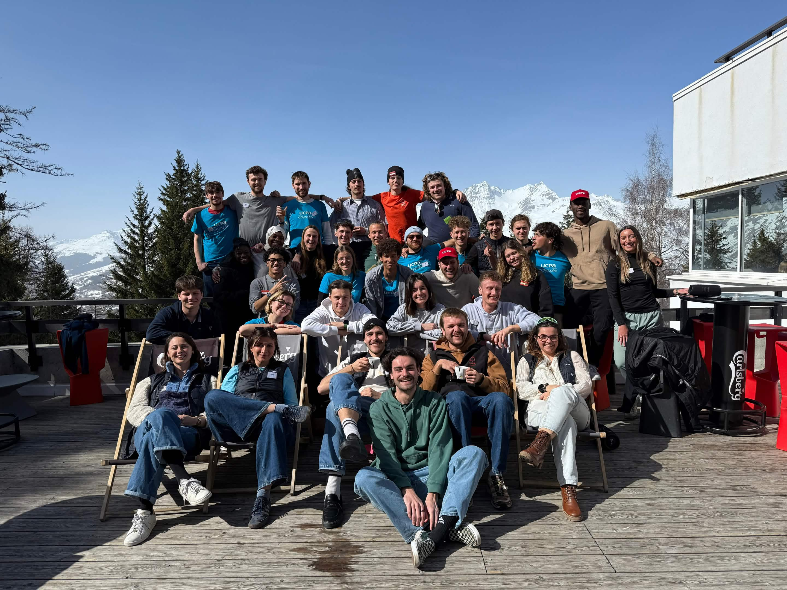
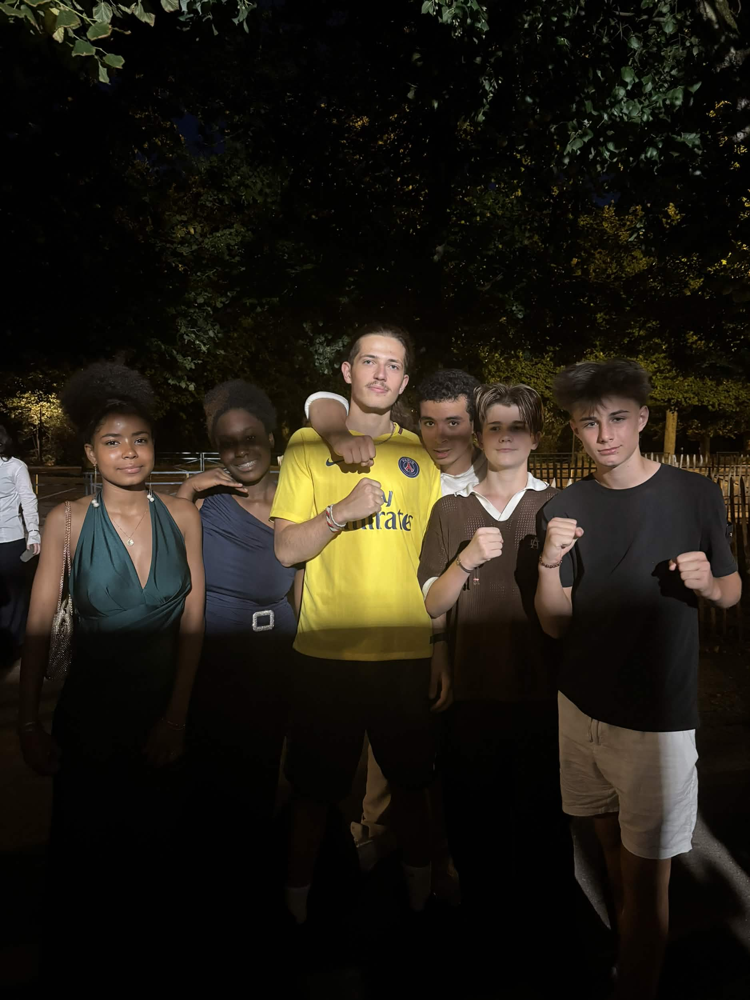
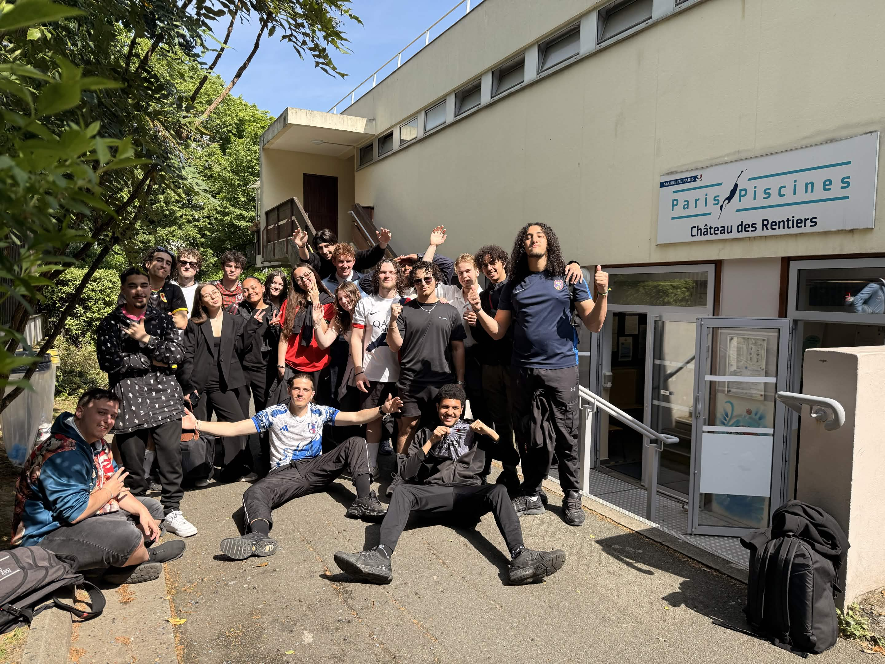
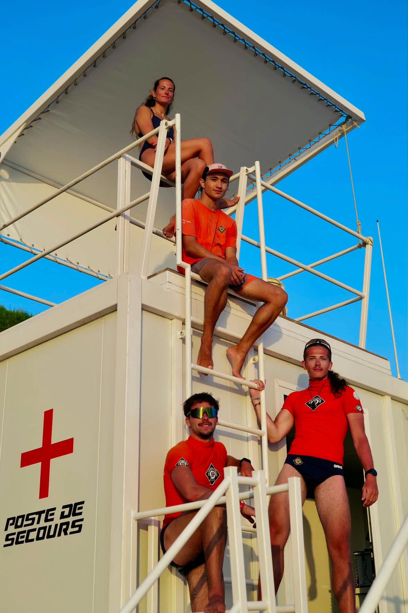
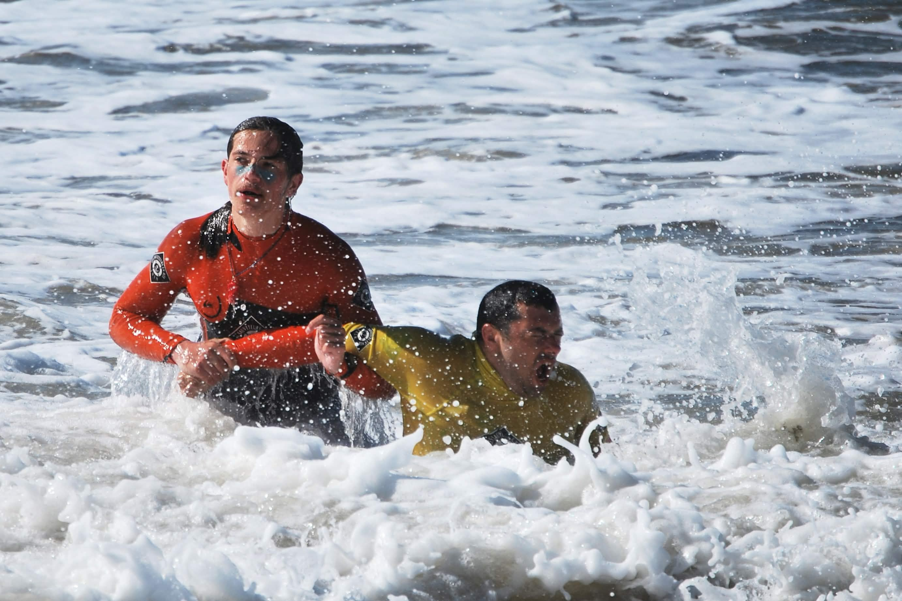
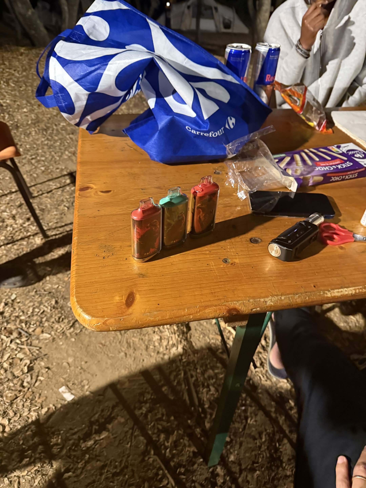
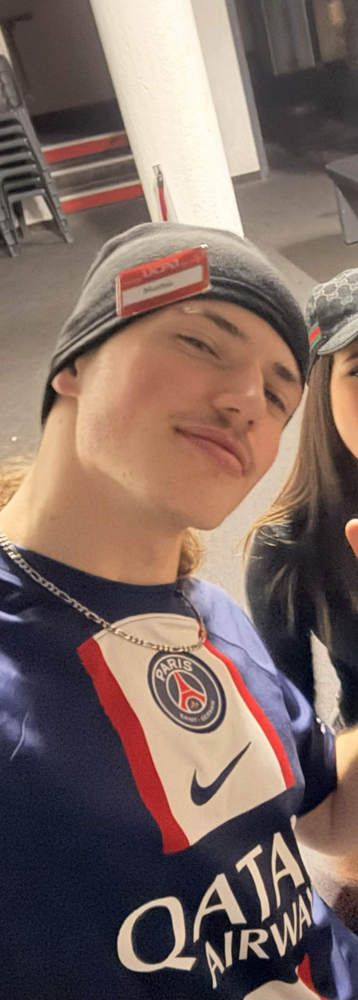
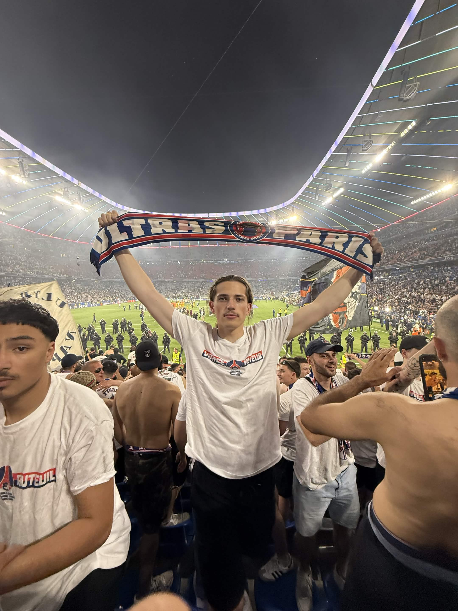

Basile (et son strass)
Il vient en colo avec moi. Le strass sur sa dent est indispensable : quand je suis au bout de ma vie, son sourire me remotive.
Consigne : ne pas confisquer le strass.
Séjour : Port K (Port Camargue) · Équipe d'animation
À RENDRE AVANT LE DÉPART (rendue en retard, pardon) Photo d'identité
prise un jour calme
Photo d'identité
prise un jour calme
Ça fait 1 an et demi que j'ai découvert l'UCPA, après l'avoir longuement critiquée. J'ai pas arrêté de critiquer, je dois avouer. J'ai juste développé.


Dans une cité scolaire : je m'occupe des collégiens jusqu'à la prépa, en passant bien évidemment par le lycée. En attendant de pouvoir devenir pompier.
On croise les doigts.

Formateur BAFA depuis 4 ans, et formateur SB depuis 2 ans.
(La formation coûte plus cher mais on est payé pareil. Croyez pas.)

Je suis aussi secouriste sur des événements.
(Oui, j'ai déjà vu des morts.)
L'été, je surveille les plages.
(Oui, je suis en moule-bite. Et oui, j'ai déjà sauvé des gens.)


LISTE DU TROUSSEAU · À COCHER AU DÉPART
Désolé, j'ai rendu ma présentation en retard.
Pour me faire pardonner, au lieu de 3 indispensables, je vous en mets 6. On est quittes ?
Mathis
Il vient en colo avec moi. Le strass sur sa dent est indispensable : quand je suis au bout de ma vie, son sourire me remotive.
Achat compulsif. Livraison offerte, ce qui aurait dû me mettre la puce à l'oreille. Elles ne sont toujours pas arrivées et j'ai très peur de m'être fait arnaquer par du dropshipping.
Si vous me voyez arriver en tongs, ne posez pas de questions.

Les jeunes ont déclenché l'alarme incendie avec leurs déos. Moi, je confisque. Et je porte les saisies sur moi, comme ça rien ne se perd.
Mon record actuel : 15 puffs confisquées en un séjour. Mon projet pour Port K : le battre.

À l'époque où j'avais les cheveux longs, je le portais tout le temps parce que j'avais la flemme de me coiffer. Résultat : les jeunes m'ont surnommé « Hijab ». Le surnom est resté. Le bonnet aussi.

Finale de la Ligue des Champions à Munich, la toute première du PSG. J'y étais. 5-0. Je vais vous en parler. Souvent. Pardon d'avance.

P.S. : si quelqu'un a des nouvelles de mes crocs, je suis preneur.
Hâte de vous voir à Port K.